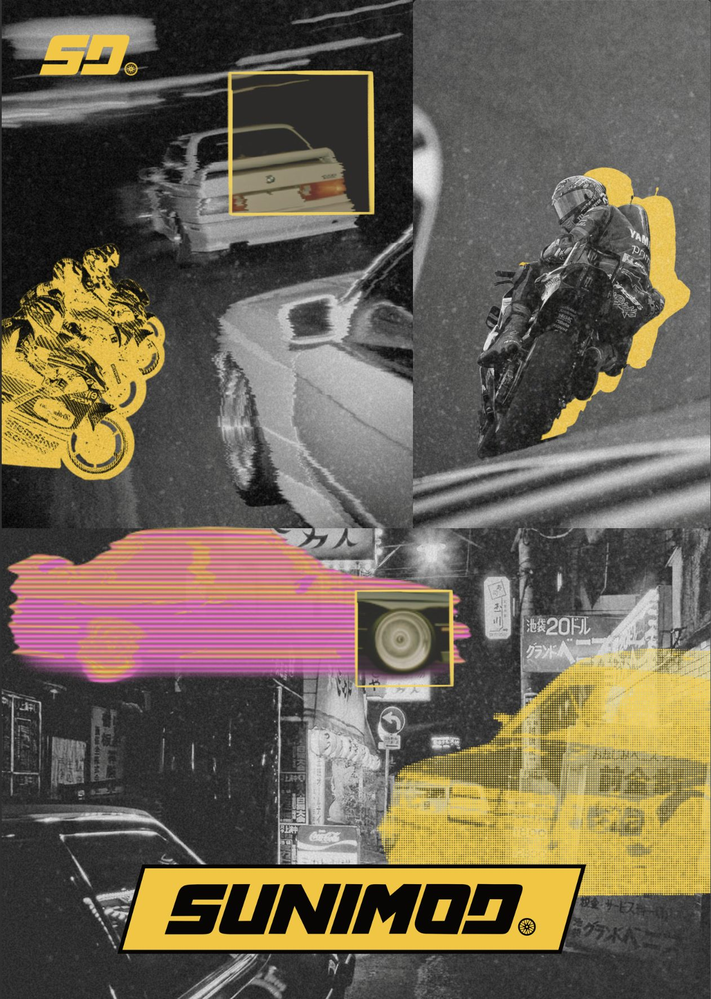
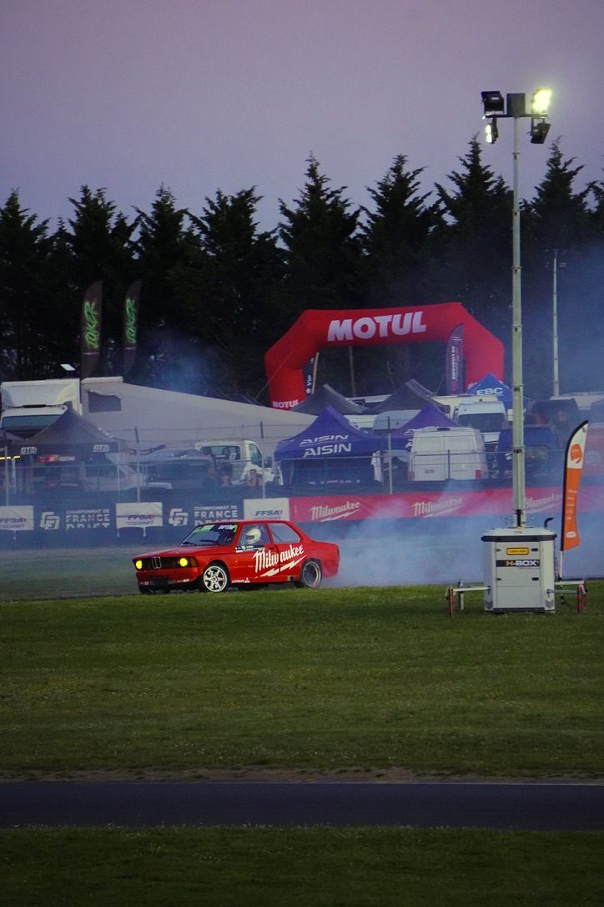
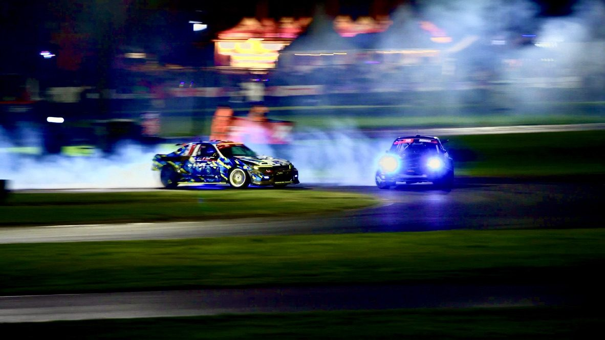
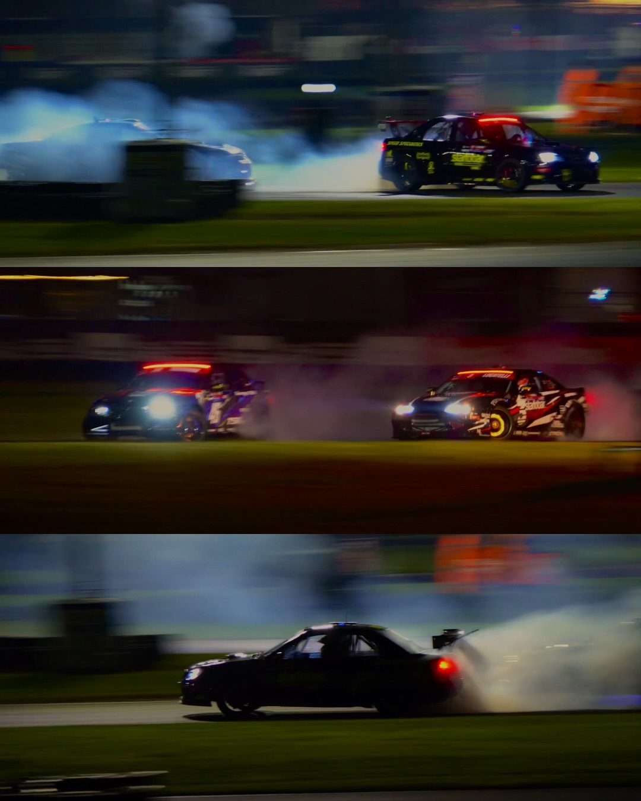
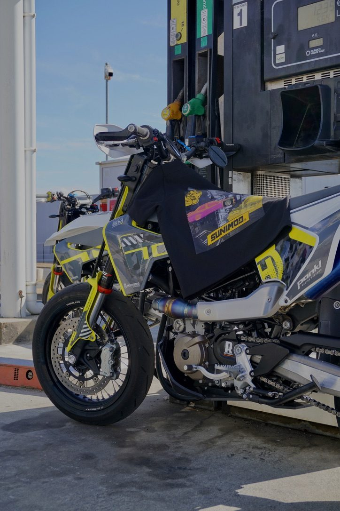
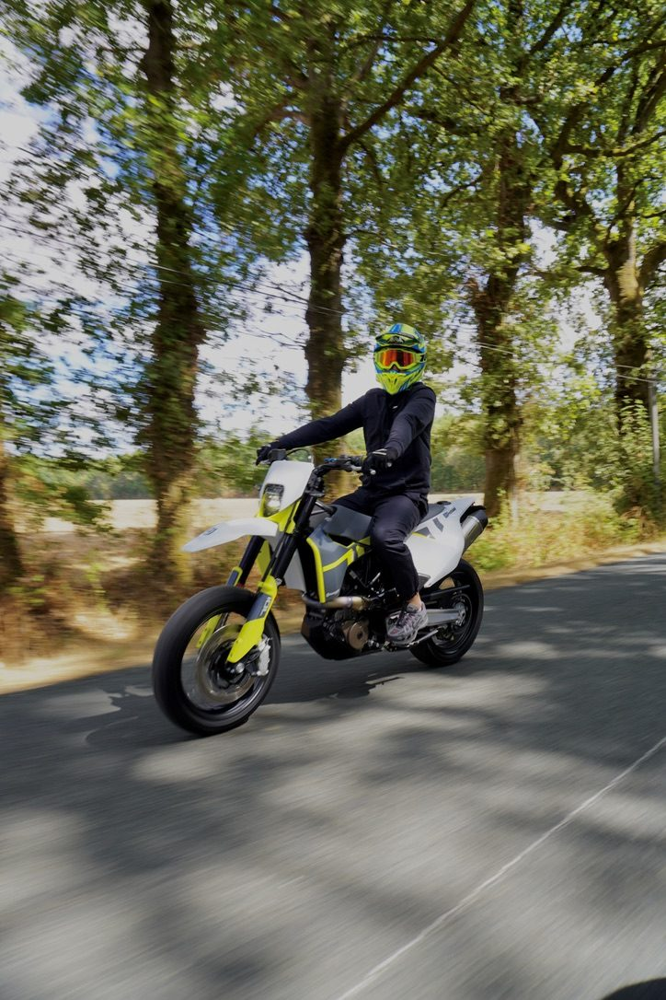
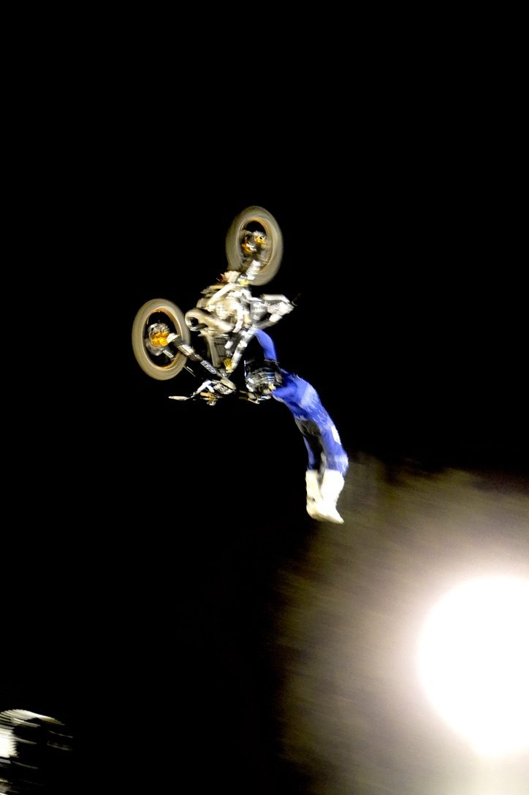

Sunimod · projet personnel, 2026
La direction artistique complète d'un projet entre amis autour des sports auto et moto : le logo, l'univers, les photos de voitures, de drift et de motos, et les montages.







